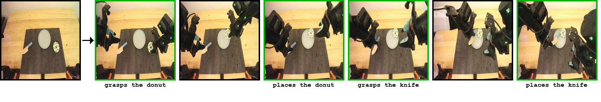
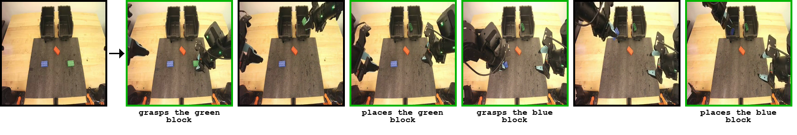
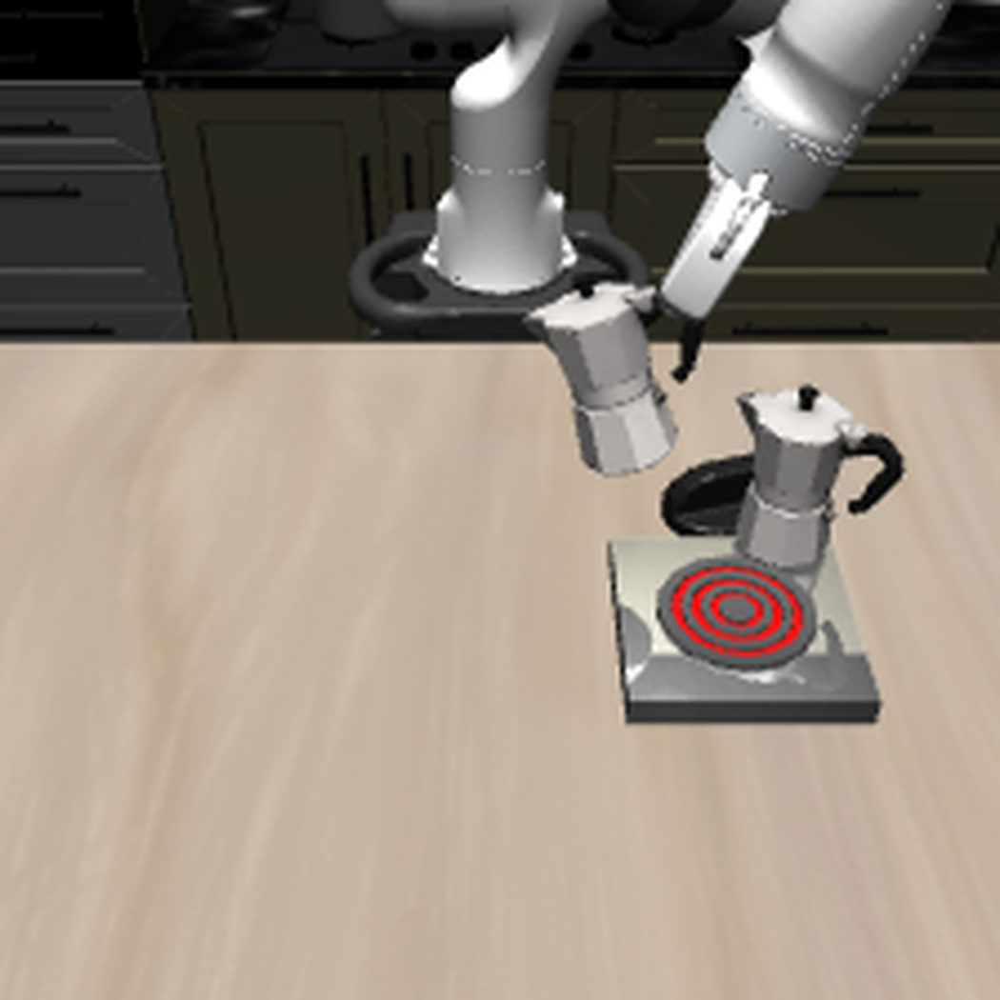
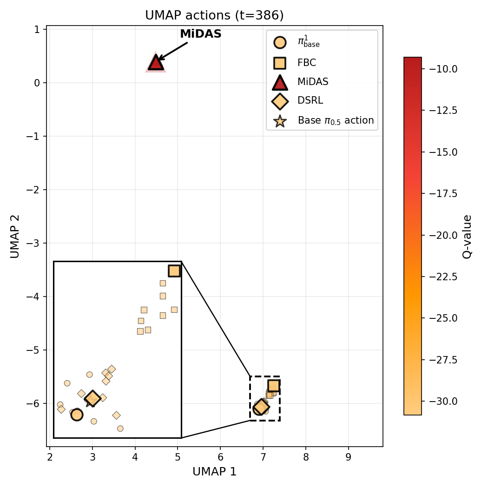
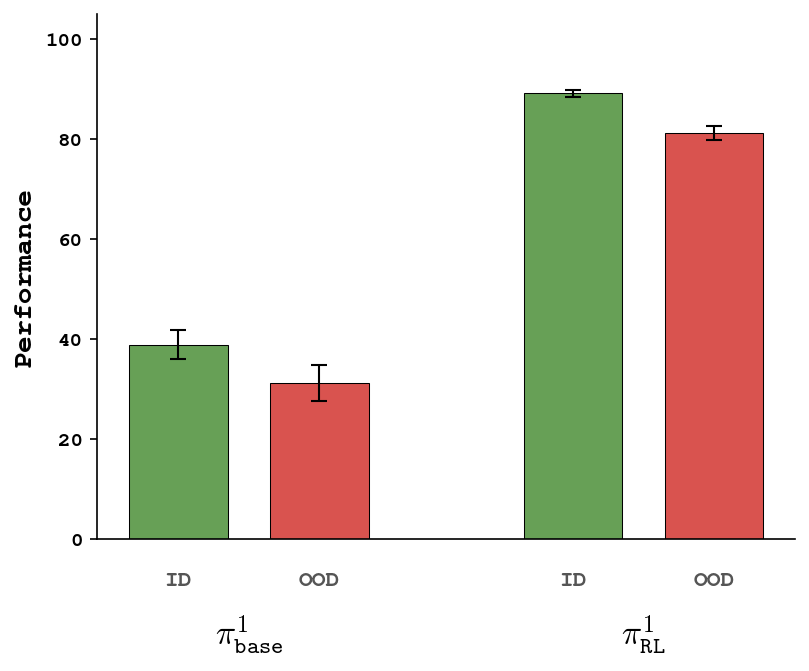
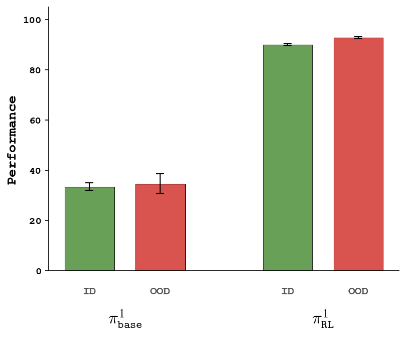
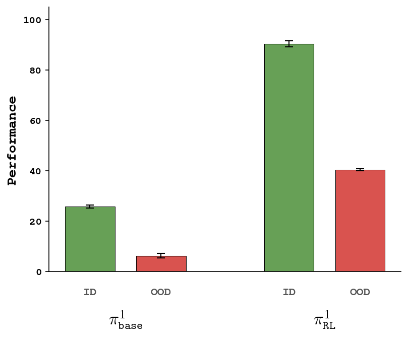
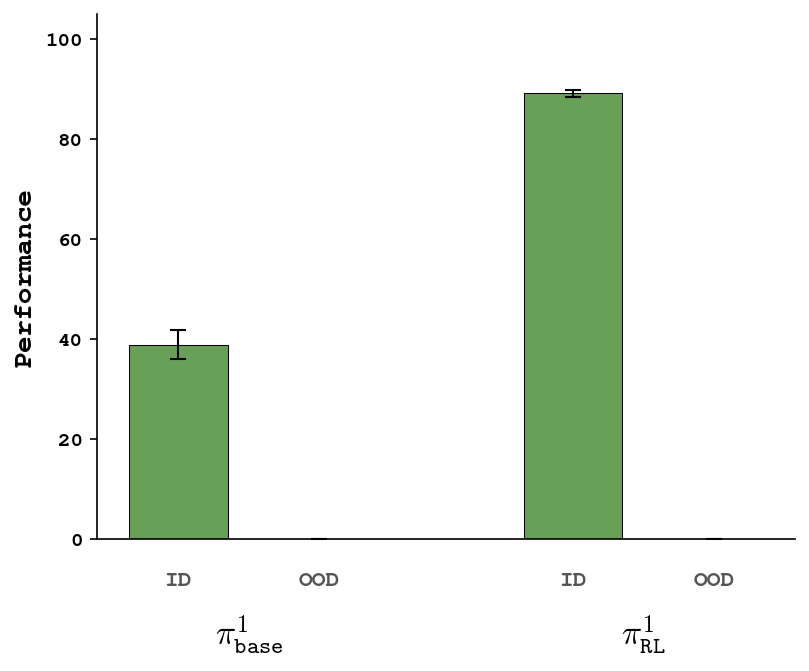
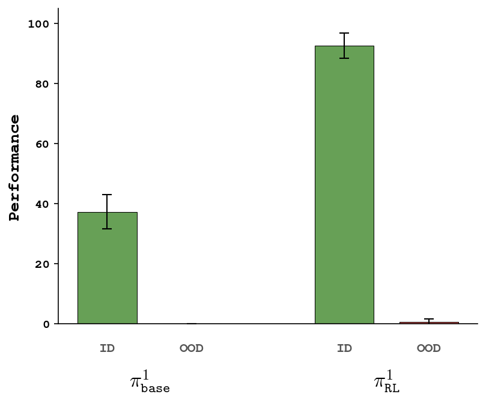

Adaptation of Generalist Robot Policies with Minimal Data
A pretrained VLA, one demonstration, and autonomous interaction is enough — here’s why.
Anonymous Authors
CoRL 2026 Submission · Under Review
Overview. A single demonstration is sparse and underdetermined on its own, but pretrained VLA representations turn it into a useful anchor for adaptation. Few-demo behavior cloning narrows the search space to a task-relevant region around the demonstration, and online residual RL then expands local success by learning value-guided corrections on top of the warm-started base policy.
Abstract.
A central goal of robot learning is to move beyond task-specific human data collection toward robots that improve through autonomous interaction. Yet fully autonomous learning remains difficult with current policies: sparse rewards and weak zero-shot exploration make it unlikely that a robot will discover successful behavior from scratch. We study minimal-data adaptation, a regime in which a pretrained robot policy must learn a new task from as little as one demonstration followed by autonomous online interaction. This setting minimizes task-specific supervision while testing whether pretrained policies provide enough structure to make reinforcement learning tractable. We present MiDAS, an offline-to-online RL framework that first anchors a pretrained VLA to the target task with few-demo behavior cloning, then improves it through value-based online residual RL. Across LIBERO and RoboCasa, MiDAS recovers strong task performance from as little as one demonstration, substantially outperforming baselines and generalizing beyond demonstrated conditions. To the best of our knowledge, this is the first demonstration of reliable robot policy adaptation from a single task demonstration. We further validate MiDAS on bimanual YAM hardware, where it learns effective behaviors with roughly six hours of autonomous interaction.
Autonomous adaptation requires three ingredients. The policy must (i) represent high-dimensional observations in a form useful for control and value learning, (ii) produce behavior that reaches reward-bearing regions during deployment, and (iii) use this experience to improve efficiently. Modern VLAs make progress on (i) and (ii), but are not reliable zero-shot learners. Our central question: can minimal task-specific supervision — a single demonstration — close this gap?
INGREDIENT 1
Represent observations for control & value learning
High-dimensional pixels and language need to become features that are useful for both action prediction and value learning.
Supplied by: VLA pretraining
INGREDIENT 2
Reach reward-bearing regions of the state space
Online RL needs the robot to occasionally succeed. The policy must at least attempt the task in a way that produces signal.
Supplied by: 1 demonstration (on top of pretraining)
INGREDIENT 3
Use experience to improve efficiently
Sparse interaction data must yield reliable control — including actions outside what the base policy reliably proposes.
Supplied by: Autonomous online interaction
What does one demonstration get you?
Before the analysis, here is what one demonstration plus autonomous interaction actually achieves on a real bimanual robot. Using π0.5 as the pretrained base policy and a single human demonstration, MiDAS runs online residual RL on a bimanual YAM platform and converges to high task success in roughly 5–6 hours of autonomous interaction.


Real-world rollouts on a bimanual YAM platform.
(T1) Place a green block in the right container and a blue block in the left. The 1-demo warm-start reaches 40%; online RL improves it to 67% and produces qualitatively new corrective behaviors.
(T2) Place a knife and a donut on a plate. The warm-start is substantially weaker; online RL improves success from 27% → 80% after 5–6 hours of autonomous interaction.
In simulation, MiDAS adapts a pretrained VLA to long-horizon LIBERO-Long and RoboCasa-365 kitchen tasks from a single demonstration, recovering strong success rates where baselines stall (see Q3 below).
The Minimal-Data Adaptation regime.
Given a pretrained vision–language–action policy πbase, K successful demonstrations in a target environment, and access to autonomous interaction with that environment, minimal-data adaptation (MDA) asks whether we can learn an adapted policy that achieves high return using only this limited supervision. The demonstrations are not meant to solve the task on their own — they serve as a minimal scaffold that makes subsequent autonomous learning tractable. The case K = 1 is the sharpest version: one demonstration is rarely sufficient for imitation, but may expose enough task-relevant behavior for interaction-driven improvement to begin.
MDA targets the narrow regime where autonomous learning first becomes tractable. With no task-specific data, current pretrained policies often fail to reach reward often enough for sparse-reward interaction to improve them. A small number of demonstrations can make the problem just structured enough — exposing the intended behavior and bringing the policy into the vicinity of success — while leaving robustness and distribution coverage to be learned online. This regime separates the roles of the three available sources of supervision: structure inherited from pretraining, task information provided by a demonstration, and corrections learned through autonomous interaction.
What enables minimal-data adaptation?
We dissect each of the three ingredients. Setup: we use π0.5 as πbase and run MiDAS with K = 1 on LIBERO-Long (long-horizon language-conditioned manipulation) and RoboCasa-365 (long-horizon household manipulation in diverse kitchen scenes).
Question 1 · what does the pretrained model + one demo recover?
Finding: Pretraining and task-specific demonstrations together recover coarse task behavior, but not reliable control.
We compare 1-demo BC on π0.5 against three alternatives: (a) a flow-matching policy on pretrained ResNet features — tests whether generic visual pretraining suffices; (b) a flow-matching policy on privileged state — tests whether near-optimal observations alone close the gap; (c) the zero-shot πbase — tests whether pretraining alone identifies the task. All three perform poorly. ResNet flow-policy gets non-zero success on only 3/10 LIBERO-Long tasks; the privileged-state policy and πbase sit at 0%. MDA needs both task grounding from the demonstration and behavior-aware representations from pretraining — privileged state inputs alone do not recover this behavior, so the benefit of pretraining goes beyond improved state representation.
Fig. Performance of different task representations for behavior cloning. Only the pretrained VLA + 1 demo recovers any meaningful task behavior.
Yet even πbase1 isn’t reliable. Qualitatively, the policy approaches the right object, attempts the right subtask sequence, and follows a trajectory that resembles the demonstration. The failures are in execution: contact, alignment, grasping, and recovery remain brittle.
Few-demo BC recovers task-level behavior, but not fine-grained control. Rollouts of πbaseK at K=1 on Both Moka Pots → Stove. The policy reaches the right objects but fails to grasp the second pot under orientation changes.
Question 2 · how much do pretrained representations help online learning?
Finding: VLA representations are control-aligned — sparse-reward residual RL becomes dramatically more sample-efficient.
We vary the representation used by the residual learner while keeping everything else fixed.
With a ResNet fine-tuned from scratch, MiDAS fails to converge at K=1 — sparse interaction can’t learn task-relevant visual features and action priors simultaneously.
With frozen DINO features, learning eventually progresses but needs substantially more interaction — visual invariances alone aren’t enough.
With features from the pretrained π0.5 backbone, learning is rapid: VLA pretraining yields representations already aligned with robot control.
Notably, πbase, πbaseK, and πbase50 features perform similarly — the sample-efficiency gain comes from the pretrained representation, not from task-specific BC of the backbone.
Fig. Online adaptation with different representations. Frozen pretrained VLA features make sparse-reward residual RL sample-efficient where alternatives fail.
Question 3 · can the missing fine-grained control be reached within the base policy’s support?
Finding: No — closing the control gap requires actions outside the base policy’s effective support. Value-based residual RL provides exactly this.
The previous analysis showed that πbaseK often produces task-relevant behavior but solves the task inconsistently. Do the right actions already lie within its support but are not reliably selected, or do they fall outside its effective support? We test this by comparing MiDAS to two representative alternatives that stay inside the base policy’s distribution:
Filtered BC, which sharpens modes πbaseK already reaches by finetuning on successful online rollouts; and
Diffusion-Steering RL (DSRL), which steers within the action distribution by modifying its initial noise. In contrast, MiDAS applies value-guided residual corrections, allowing executed actions to move beyond high-probability samples from the base policy.

(a) Trajectory critical state

(b) UMAP of actions
MiDAS reaches actions outside the effective support of πbaseK. UMAP of action chunks at a critical step of a LIBERO-Long rollout. Filtered BC and DSRL remain concentrated near samples from πbaseK and fail; MiDAS selects an action in a disjoint region with higher Q* and succeeds.
Empirically, Filtered BC and DSRL improve only marginally over πbaseK, while MiDAS achieves substantially higher success across both benchmarks:
Table 1. One-demo adaptation results (% success, mean ± std over 3 seeds).
| Task |
BC |
DSRL |
Filt. BC |
MiDAS |
| LIBERO-Long |
| Alph. Soup + Cr. Cheese → Basket | 12.7±1.2 | 16.0±6.9 | 14.0±2.0 | 98.7±1.2 |
| Alph. Soup + Tom. Sauce → Basket | 4.0±3.5 | 3.3±1.2 | 2.0±0.0 | 82.0±5.3 |
| Black Bowl → Bottom Drawer | 22.7±6.4 | 26.7±1.2 | 28.7±10.3 | 96.7±2.3 |
| Book → Caddy | 37.3±7.0 | 30.7±12.2 | 28.0±2.0 | 92.7±5.0 |
| Both Moka Pots → Stove | 13.3±3.1 | 20.7±2.3 | 19.3±7.0 | 90.7±2.3 |
| Cr. Cheese + Butter → Basket | 34.0±9.2 | 39.3±1.2 | 68.0±2.0 | 100.0±0.0 |
| Moka Pot → Stove | 84.0±0.0 | 92.7±3.1 | 85.3±8.3 | 94.0±0.0 |
| White Mug + Choc. Pudding | 33.3±11.7 | 33.3±10.3 | 39.3±2.3 | 85.3±4.2 |
| White Mug + Plates | 30.0±2.0 | 23.3±3.1 | 34.7±6.4 | 76.0±2.0 |
| Yellow-White Mug → Microwave | 64.0±2.0 | 47.3±8.3 | 68.0±7.2 | 84.7±4.2 |
| Average | 33.5±1.8 | 33.3±2.0 | 38.7±4.8 | 90.1±0.4 |
| RoboCasa |
| Banana: Fridge Drawer → Shelf | 13.3±2.5 | 13.9±0.2 | 19.3±3.1 | 95.2±2.8 |
| Hot Dog: Counter → Cabinet | 29.3±0.9 | 17.6±8.4 | 36.0±24.0 | 87.1±8.6 |
| Mug → Coffee Machine + Start | 24.0±7.1 | 24.7±3.7 | 46.7±6.2 | 81.9±5.7 |
| Cup + Bowl → Dishwasher + Close | 0.0±0.0 | 0.0±0.0 | 0.0±0.0 | 0.0±0.0 |
| Average | 22.2±3.5 | 18.7±4.1 | 34.0±10.6 | 88.1±5.7 |
Online learning curves on representative tasks. MiDAS converges to high success within budget; baselines that stay inside the base policy’s prior do not.
The fine-grained control missing from πbaseK does not lie within the base policy’s effective action prior. Sharpening or steering within that prior cannot reach it. Closing the control gap requires online adaptation that expands the action distribution beyond πbaseK.
Generalization & robustness.
Section 5 showed how the three ingredients combine to recover task performance from the few initial conditions in the demonstration. Here we ask: can MiDAS generalize beyond the narrow support of initial states, and if so, how?
We test two categories of shifts: (a) observation shifts — task-irrelevant inputs (color, texture, language paraphrase) — and (b) state shifts — dynamically relevant quantities (object position, shape, identity). Evaluation is on the 10 long-horizon tasks in LIBERO-Long.
Question 1 · do observation shifts (visual / language) break the adapted policy?
Finding: Observation-level robustness is inherited from the frozen vision–language backbone — online RL doesn’t cost it.
Under color and texture changes, πbase1 retains most of its in-distribution performance, and the adapted policy shows a similar retention pattern despite using only a lightweight residual actor. The same holds under language paraphrases. Both policies share the same frozen VLM backbone, and the RL module adds little perceptual or linguistic capacity, so this robustness is best explained by invariances already present in the pretrained representation. Online RL improves control without sacrificing observation-level generalization.

(a) Visual shift (color / texture)

(b) Language shift (paraphrase)
Observation shifts. Pretrained representations preserve performance under visual and language changes.
Question 2 · what about state shifts that require the policy to act differently?
Finding: Generalization depends on whether new behavior is required. Same behavior in a new location — yes. New affordance / strategy — no.
Online RL improves over πbase1 under some state shifts — especially shape changes where the required grasp is similar. This makes sense: the policy executes the same behavior in a different part of the state space. But performance drops sharply under object swaps and object changes: shifts in object affordance or placement can require distinct manipulation strategies, and these are difficult to infer from one demonstration plus interaction around it. This pathology is, in a sense, by design of the minimal-data regime.

(a) Shape change

(b) Object swap

(c) Object change
State shifts. Online RL improves robustness when the same underlying behavior suffices (a). It does not bridge shifts that demand a distinct manipulation strategy (b, c).
Question 3 · can broader coverage — without more demonstrations — expand the generalization boundary?
Finding: Yes. A reset-distribution curriculum recovers most of the position-generalization gap with a 50-demo policy — without additional demos.
We progressively widen the reset distribution during online RL. Robustness improves with each stage, closing much of the gap to πbase50 when the perturbed configurations preserve the same underlying manipulation strategy. Naively increasing the breadth of demonstrations helps too. Together, these results say: when the bottleneck is state coverage rather than missing behavior, autonomous interaction can extend the reach of minimal-data adaptation.
Curriculum closes the gap. Progressively widening the reset distribution during online RL recovers most of the position-generalization gap with πbase50 without additional demos.
MiDAS — the recipe.
MiDAS (Minimal-Data Adaptation Strategy) is a two-stage instantiation of the principle above: pretraining + 1 demo seed coarse task behavior, and online residual RL closes the control gap. Stage I uses the demonstration to anchor the policy to the task; Stage II uses autonomous interaction to expand the action distribution toward reliable success.
Stage I · Behavior cloning on K demonstrations
Adapt the pretrained VLA to the task: LoRA on the VLM backbone for compute efficiency, full fine-tuning of the action head with a flow-matching loss. The resulting policy πbaseK coarsely attempts the task but is not yet reliable.
Stage II · Online residual RL with frozen backbone
Freeze πbaseK and train a lightweight residual actor–critic on top of its representations. At each state, the base policy proposes an action chunk; the residual policy conditions on the state and the proposal, and predicts the executed action directly (a Gaussian-tanh distribution). This conditioning anchors RL to a task-relevant proposal while letting the executed action shift to higher-value regions outside the base policy’s reliable support. A critic ensemble is trained with TD learning.
Three design choices for the minimal-data regime
(1) Offline warm-up. Initialize the residual actor by regressing it onto the base policy’s proposals on a buffer of demonstrations + early rollouts. Train the critic on the same buffer with TD learning so it is calibrated to the regions where online improvement begins.
(2) Success balancing. Maintain a standard replay buffer and a success buffer (both seeded with the K demonstrations). Oversample successful transitions during critic training to keep the value function from collapsing to failure-dominated estimates when the base policy succeeds only 2–5% of the time.
(3) Residual training with PA-RL. Sample a single base proposal, draw N residual samples conditioned on it, and apply a PA-RL Best-of-N distillation objective with an action gradient. This produces aggressive value-guided updates while needing only one forward pass through the expensive frozen base.
Limitations.
Two caveats. First, the present instantiation remains limited on longer-horizon tasks, where sparse-reward value learning must assign credit through long sequences of actions proposed by a frozen prior. Scaling MDA likely requires stronger value priors — pretrained critics or value decompositions that expose intermediate progress signals. Second, Stage II is reset-dependent and interaction-intensive. This is manageable in simulation but constrains real hardware, where failures, resets, and safety limit autonomous practice without an operator in the loop. Reducing this dependence will require safer exploration, better failure detection, learned resets, or lightweight intervention mechanisms that preserve the low-demonstration setting.
BibTeX
@inproceedings{midas2026,
title = {Adaptation of Generalist Robot Policies with Minimal Data},
author = {Anonymous},
booktitle = {Proceedings of the Conference on Robot Learning (CoRL)},
year = {2026},
note = {Under review}
}